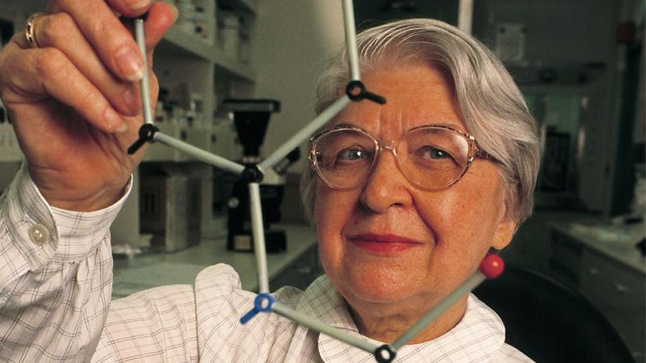

Femmes importantes qui ont créé ou découvert quelque chose ayant révolutionné le monde
-
Marie Curie
Marie Curie a découvert le radium et le polonium et a reçu deux prix Nobel pour ses travaux scientifiques.
-

Émilie Du Chatelet
Émilie du Châtelet était une scientifique française connue pour avoir traduit les travaux de Newton.
-

Françoise Barré-Sinoussi
Françoise Barré-Sinoussi a découvert le VIH, le virus responsable du sida, et a reçu un prix Nobel.
-

Stephanie Kwolek
Elle a inventé le Kevlar, un matériau très résistant utilisé dans les gilets pare-balles.
-
Rosalind Franklin
Ses recherches ont permis de comprendre la structure de l’ADN, une découverte capitale pour la génétique.
-

Hedy Lamarr
Elle a participé à l’invention d’une technologie qui est à l’origine du Wi-Fi et du Bluetooth.